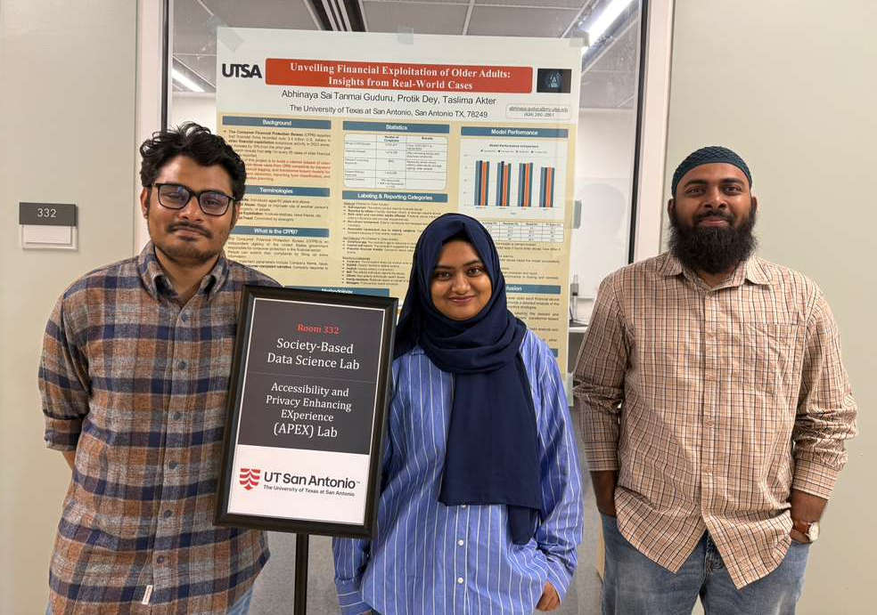
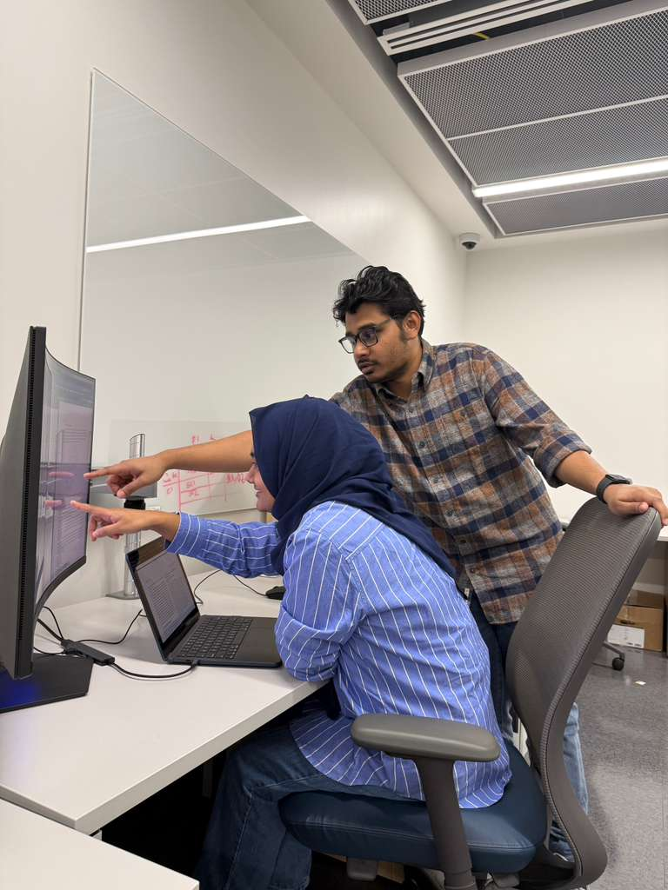
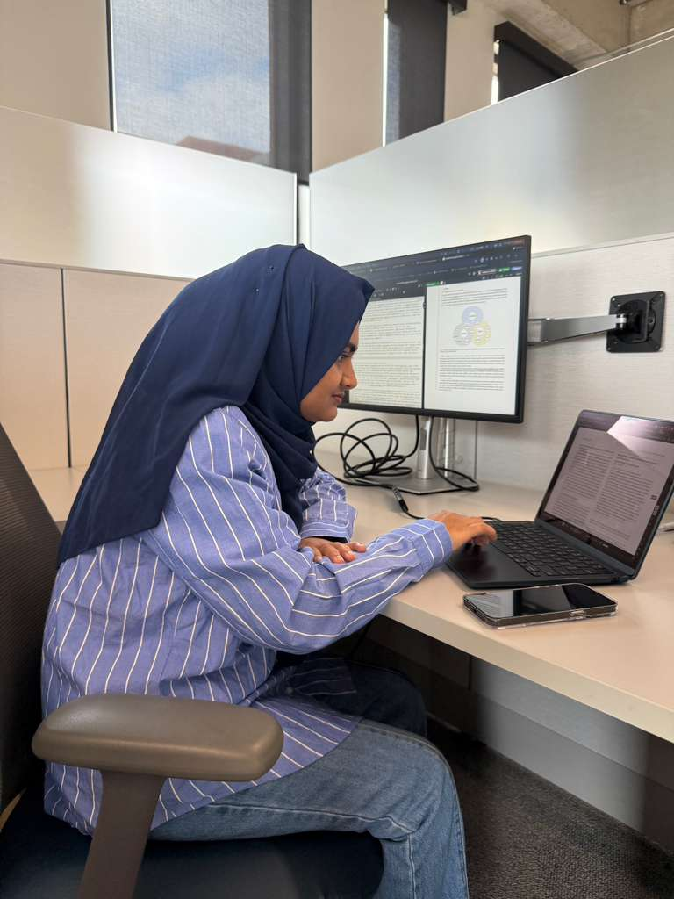

Main Building Photo

Welcome to the Accessibility and Privacy Enhancing EXperience (APEX) Lab

Team Colleboration

The Privacy Lab is led by Prof. Taslima Akter in the College of AI, Cyber, and Computing at the University of Texas at San Antonio. Our research focuses on advancing privacy and accessibility for marginalized populations, with a particular focus on people with disabilities. To learn more about our work, explore our recent publications. Visit the People page to meet the team driving our research forward.
We have evaluated the accessibility of 30 widely used collaborative technologies. Find the paper here.

Read more about the fellowship and Dr. Akter's work here.

Undergraduate student Abhinaya Guduru presented a poster on financial abuse experienced by older adults at the 2025 Undergraduate Research & Creative Inquiry Showcase and received the Distinguished Research Award.